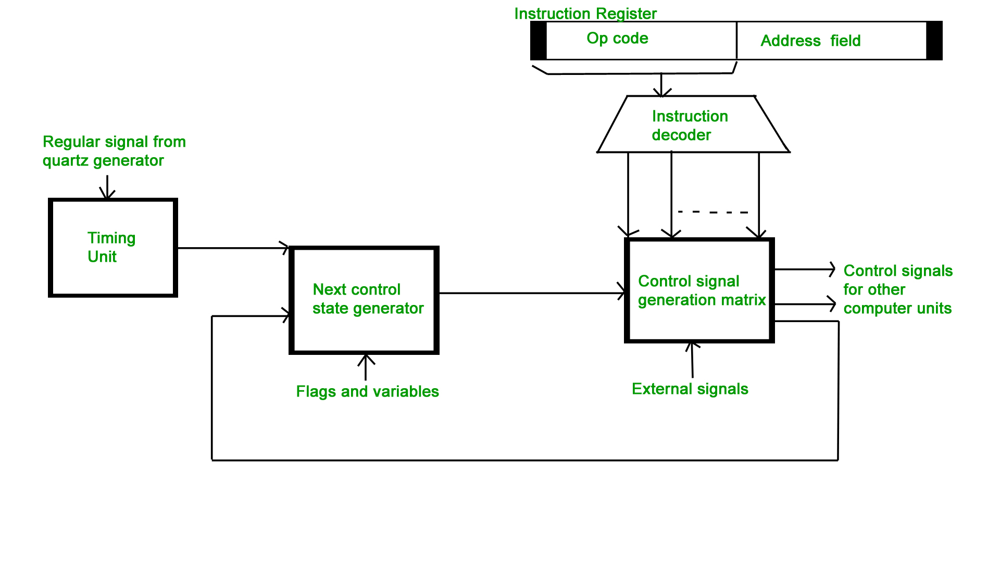
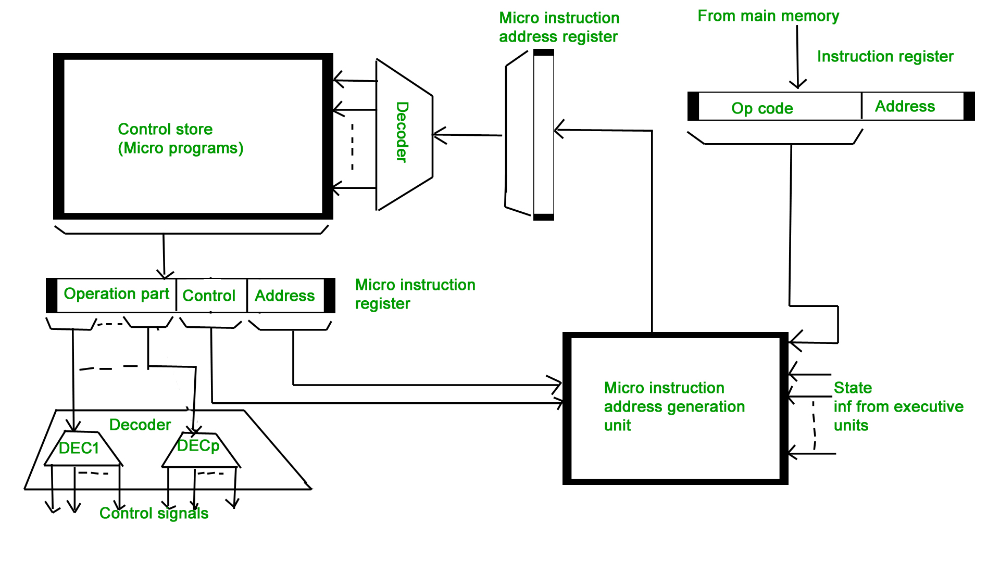

To execute an instruction, the control unit of the CPU must generate the required control signal in the proper sequence. There are two approaches used for generating the control signals in proper sequence as Hardwired Control unit and Micro-programmed control unit.
Hardwired Control Unit –
The control hardware can be viewed as a state machine that changes from one state to another in every clock cycle, depending on the contents of the instruction register, the condition codes and the external inputs. The outputs of the state machine are the control signals. The sequence of the operation carried out by this machine is determined by the wiring of the logic elements and hence named as “hardwired”.
- Fixed logic circuits that correspond directly to the Boolean expressions are used to generate the control signals.
- Hardwired control is faster than micro-programmed control.
- A controller that uses this approach can operate at high speed.

Micro-programmed Control Unit –
- The control signals associated with operations are stored in special memory units inaccessible by the programmer as Control Words.
- Control signals are generated by a program are similar to machine language programs.
- Micro-programmed control unit is slower in speed because of the time it takes to fetch microinstructions from the control memory.
Some Important Terms –
- Control Word : A control word is a word whose individual bits represent various control signals.
- Micro-routine : A sequence of control words corresponding to the control sequence of a machine instruction constitutes the micro-routine for that instruction.
- Micro-instruction : Individual control words in this micro-routine are referred to as microinstructions.
- Micro-program : A sequence of micro-instructions is called a micro-program, which is stored in a ROM or RAM called a Control Memory (CM).
- Control Store : the micro-routines for all instructions in the instruction set of a computer are stored in a special memory called the Control Store.

Types of Micro-programmed Control Unit – Based on the type of Control Word stored in the Control Memory (CM), it is classified into two types :
1. Horizontal Micro-programmed control Unit :
The control signals are represented in the decoded binary format that is 1 bit/CS. Example: If 53 Control signals are present in the processor than 53 bits are required. More than 1 control signal can be enabled at a time.
- It supports longer control word.
- It is used in parallel processing applications.
- It allows higher degree of parallelism. If degree is n, n CS are enabled at a time.
- It requires no additional hardware(decoders). It means it is faster than Verical Microprogrammed.
2. Vertical Micro-programmed control Unit :
The control signals re represented in the encoded binary format. For N control signals- Log2(N) bits are required.
- It supports shorter control words.
- It supports easy implementation of new conrol signals therefore it is more flexible.
- It allows low degree of parallelism i.e., degree of parallelism is either 0 or 1.
- Requires an additional hardware (decoders) to generate control signals, it implies it is slower than horizontal microprogrammed.
GATE CS Corner Questions
Practicing the following questions will help you test your knowledge. All questions have been asked in GATE in previous years or in GATE Mock Tests. It is highly recommended that you practice them.
References –
Control Unit – Wikipedia
Control Unit – edux.pjwstk.edu.pl